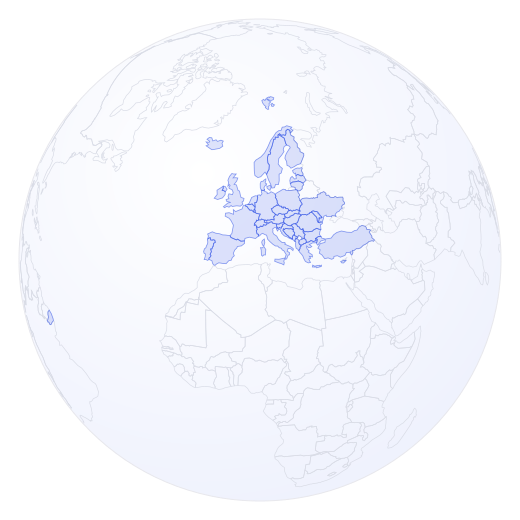

Explorer · Pays
Où va la R&D mondiale ?

⟲ glisser pour tourner · cliquer un pays
→
le globe s'aplatit
morphing de projection · 700 ms
(reduced-motion : bascule directe)
… vers la carte d'analyse existante, centrée sur la cible
Sous la carte : le classement, assumé
1🇫🇷
France
€32,4 Md55 973 projets · membre UE
2🇩🇪
Allemagne
€27,0 Md28 811 projets · membre UE
3🇬🇧
Royaume-Uni
€16,7 Md24 404 projets
Maquette statique (proposé) — le globe est un rendu orthographique réel généré depuis les mêmes géométries que la carte plate (Natural Earth, domaine public) ; le morphing interpole entre les deux projections partagées.